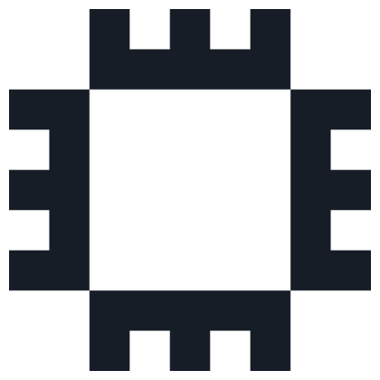
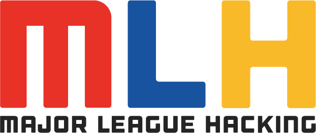
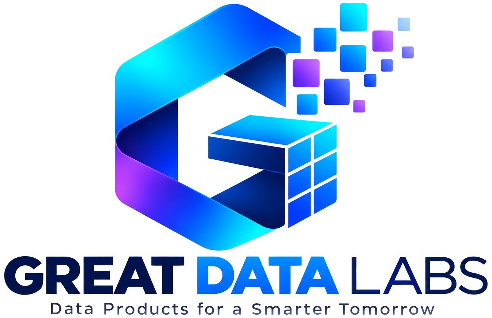

Hacktoberfest
Hack Day
Bengaluru
Everything you need before 4:30 PM

AWS Student Builder Group at Atria Institute of TechnologyFriday, October 23, 2026
Judges arrive 4:30 PM · judging 5:30–6:30 PM IST
Atria Institute of Technology
1st Main Road, AGS Colony, Anandnagar, Hebbal, Bengaluru 560024
Three tracks, one criteria sheet
Open-Source AI · Gemma 4 · Best Use of AWS




Hacktoberfest — & your host.
Hacktoberfest is DigitalOcean's annual October celebration of open source, run worldwide every year. This is one of its official in-person Hack Days. Your host is the AWS Student Builder Group at Atria Institute of Technology — a student-led builder community that runs hands-on sessions on AWS, cloud architecture and generative AI. We organised the day, the teams and the judging workbook. Settle in — whatever you need, we're right here.
All six criteria would need to be in by 6:30 PM — a team's final score is the average of every judge on it, so an empty row hurts the team more than anyone. Everything else is easy: briefing at 5:15, a volunteer keeping time at each pitch, and us around all evening if you need anything.
Three tracks, one scorecard.
Teams submitted to exactly one track — but every track is scored on the same six criteria (last page). The next three pages give each track its own space: what counts, what to verify, and what to listen for in the pitch. Full briefs live on the event site: hacktober.awsatria.tech/tracks
Core Hacktoberfest challenge · DeepAgentLabs A public GitHub repo under a real open-source license, where open-source or open-weight AI does important work — an agent skill, an LLM-powered application, or a model harness. The README names the model used and links its license. /tracks/open-source-ai
Google partner challenge, via MLH The project genuinely calls a Gemma model through the Gemini API — visible in the code or live demo, not just claimed in the pitch. The README names which Gemma model. /tracks/gemma-4
AWS Student Builder Group special At least one real AWS service, live or deployable from the repo — localhost-only does not enter. The differentiator: the pitch carries real metrics showing it scales. /tracks/aws
DeepAgentLabs
Open tools for operating agentic AI — observability, supervision, evaluation and reliability testing. They co-own Track 01: shaping the brief and reviewing entries against the same rubric you use. Entry is not conditional on their packages, but strong entries get showcased on deepagentlabs.io.
deepagentlabs.io github.com/DeepAgentLabsGreat Data Labs
Open-source initiative for practical data and AI engineering. Their great-generator project gives teams schema-driven synthetic datasets — so data-poor ideas could still ship a working demo today. If a team mentions synthetic data, this is what they mean. Contributions to their repo are welcome too.
github.com/ravikiranpagidi/great-generator greatdatalabs@proton.meEvery team works on and submits to exactly one track, and is judged only there — even if the project touches more than one track's themes. If a team asks to switch mid-round, just note the team name and let one of us know — we'll take it from there.
Best Open-Source AI Project.
The main Hacktoberfest challenge, run at every in-person Hack Day: build something original where open-source or open-weight AI does the real work, ship it to a public GitHub repo, and have it reviewed by the people who build the tools. DeepAgentLabs governs the track. Same six criteria as every other track.
Real AI work
Open-source or open-weight AI does something that matters, and the demo shows the AI doing it — not just the UI around it.
Open repo
Public on GitHub, with a real open-source license and a README that names the model and how to run it.
Original work
An agent skill, an LLM app, or a harness — genuine effort, not a renamed copy of something existing.
Runs today
Runnable from the docs, so a stranger could clone it and see the same result the team demoed.
- Public repo, real license. A public GitHub repository with an open-source license. Public without a license does not meet the challenge.
- A README that carries it. What was built, how to run or try it, and which model and key dependencies were used.
- Standards where they matter. Agent skills follow the Agent Skills open standard; harnesses show original work, not a rebrand.
- One track only. Every team submits to a single track and is judged there — confirm which one before scoring.
DeepAgentLabs
They shape the brief and review entries against the same rubric you use. Using their packages is not a requirement to enter or to win — but projects that do get showcased on deepagentlabs.io.
deepagentlabs.io github.com/DeepAgentLabsWhich model powers the project and what the AI actually decides or generates — the demo should point at the AI doing the work, not just the interface around it.
Best Use of Gemma 4.
Teams see how far they can get with a Gemma model through the Gemini API in a single day. The bar is simple: the winning project genuinely calls a Gemma model, names it in the README, and shows the integration in the code or a live demo. Same six criteria as every other track.
Real call
It genuinely calls a Gemma model through the Gemini API — confirm it in the code, not just the pitch.
Named model
The README says which Gemma model, where it is called, and how to run the project.
Visible proof
A judge can point at the integration in the code or the live demo and see the result.
Working demo
Something the room can try, plus a clear account of the problem and what Gemma contributed.
- Through the Gemini API. A mention in the pitch is not an integration — confirm the call is real in the code.
- Public repo, real license. Expected across every track; the README names the model and how to run it.
- Answer the model question. Judges will ask which Gemma model was called — the team should point at it.
- One track only. Every team submits to a single track and is judged there — confirm which one before scoring.
Great Data Labs
If a team had no real dataset, they may have used great-generator for schema-driven synthetic data — training examples, eval sets, or demo fixtures. That is what they mean if they mention synthetic data.
github.com/ravikiranpagidi/great-generatorWhich Gemma model was called and whether the multimodal parts genuinely understand images — or just transcribe them. Integration you can point at beats a claim you cannot.
Best Use of AWS.
Our home track, run by the AWS Student Builder Group at Atria. Any AWS service counts and combining several is encouraged — but the pitch has to prove the service choices were right and show, with real metrics, that the thing scales. Same six criteria as every other track.
Real service
At least one real AWS service, live or deployable from the repo — not a localhost mock.
Right choices
If several services combine, the architecture has a story: why each piece and how they talk.
Reproducible
Infrastructure as code — CDK, CloudFormation or Terraform — so the build can be handed over.
Metrics in the pitch
Real numbers showing it scales. Measurements, not adjectives.
- At least one real AWS service. Live or deployable from the repo. Something running purely on localhost with no AWS behind it does not enter.
- More than one? Tell the story. Combining services is encouraged — then the architecture explains why each piece and how they talk.
- Infrastructure as code, welcome. CDK, CloudFormation or Terraform — reproducible infrastructure signals a build that can be handed over.
- One track only. Every team submits to a single track. If the build also touches open-source AI or Gemma, it is judged in the one track the team chose — confirm that choice, then score it there.
Real metrics, not adjectives — and basic hygiene. No access keys in the repo, least-privilege IAM, and a cost story. Security and cost awareness are part of the architecture, scored within the same six criteria.
Six criteria. Every track. Same sheet.
Whichever track a team entered, you score six criteria from 0–10 each. The weighted total calculates itself — your part is simply those six numbers, given honestly. Score the build as it stands today; the idea it might become tomorrow is a lovely thing, just not what you're scoring.
Outstanding — does everything at a high level.
Strong and complete.
Solid but unremarkable.
Major gaps.
Barely working.
- Score what's in front of you. Judge the build as it stands today, and try to file all six before you close the row.
- Hold your scores until you file them. It helps everyone if judges don't compare notes beforehand — and if you happen to know a team (you mentored them, they're from your organisation, or you simply know them), just say so and we'll hand that team to another judge.
- Changed your mind? Just edit the scorecard cell — the standings recalculate themselves. If anything about a score is ever in question, bring it to the lead organizer; that's what they're there for.
Call or WhatsApp Darshan B on +91 99645 41002, or ask any volunteer in an organiser badge — whichever is closer. The 5:15 PM briefing is also a lovely moment to raise anything about the workbook.